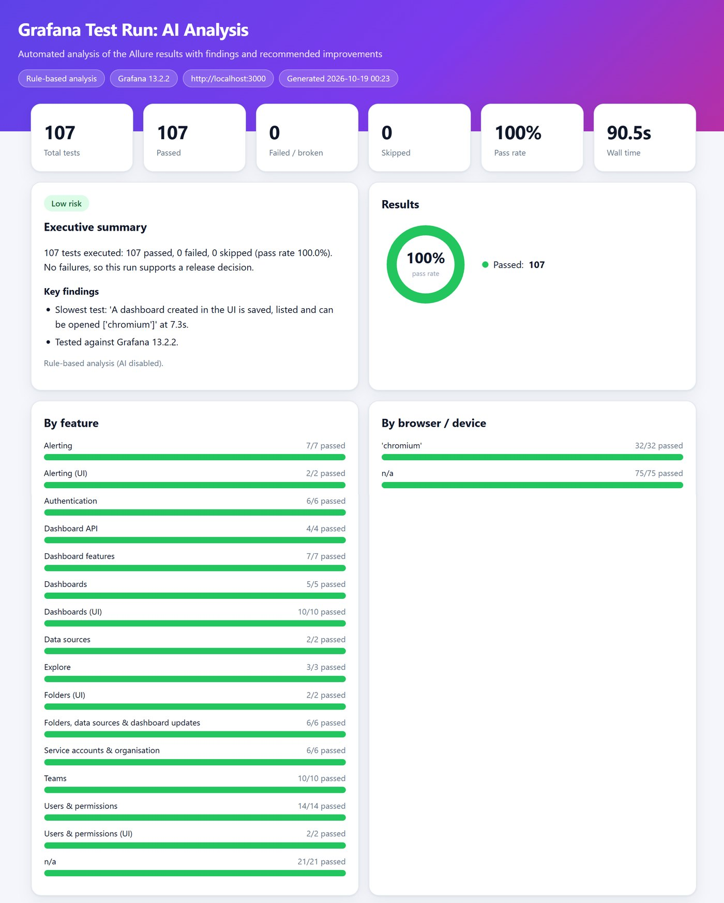
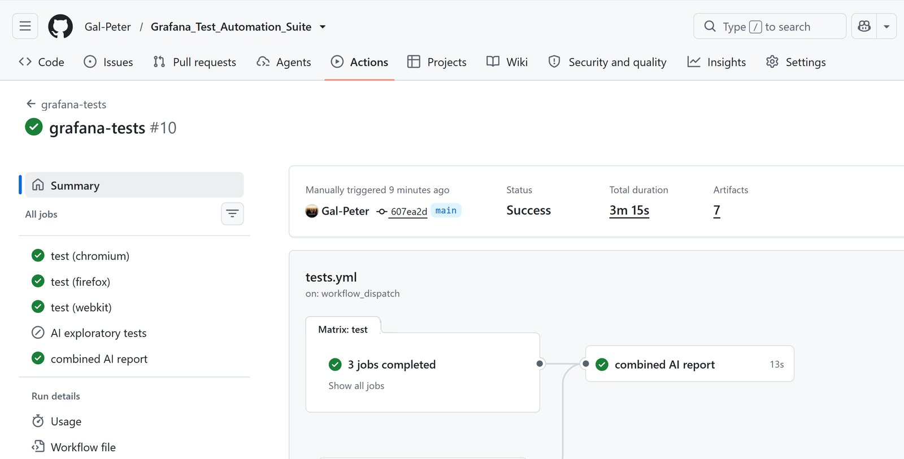
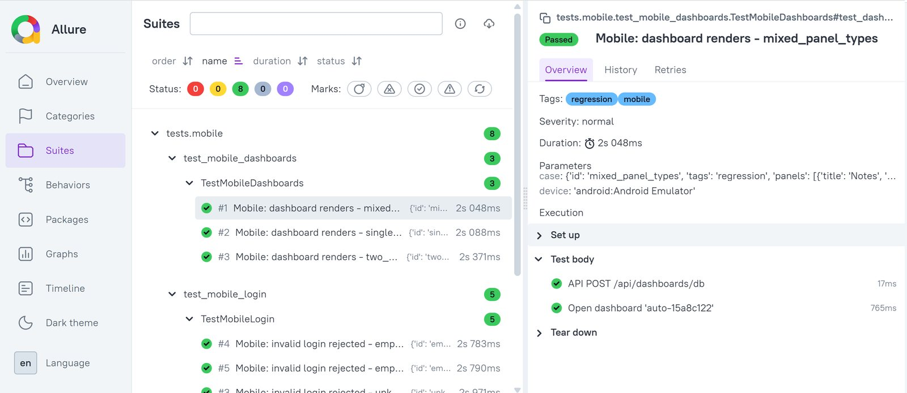

AI-driven test automation
Grafana Test Automation Suite
A complete automated test suite for Grafana 13, written to cover real business flows rather than just a login page. It runs locally, in Docker and in GitHub Actions, and it is green on Chromium, Firefox and WebKit.
- 107 desktop tests across UI and API: dashboards (create, edit, delete, import, variables, time range), folders, alert rules, users, roles, teams and folder permissions.
- Mobile web tests with Appium on an Android emulator (8 tests).
- Clean architecture: Page Object, Builder and Facade patterns, data-driven tests from CSV and SQLite, and a cleanup tracker so every test removes what it creates.
- Reporting: Allure reports with steps, traces and videos, plus an HTML report that analyses each run and suggests improvements.
- AI agents: an exploratory-testing agent, AI failure analysis and AI-written run summaries. They work with Ollama, any OpenAI-compatible endpoint or the Anthropic API, and everything still runs with no paid API and no AI provider at all.
- CI/CD: Docker image, GitHub Actions matrix across three browsers, and a scheduled nightly run.
- Python
- pytest
- Playwright
- Appium
- Allure
- LLM agents
- Docker
- GitHub Actions
- SQLite





